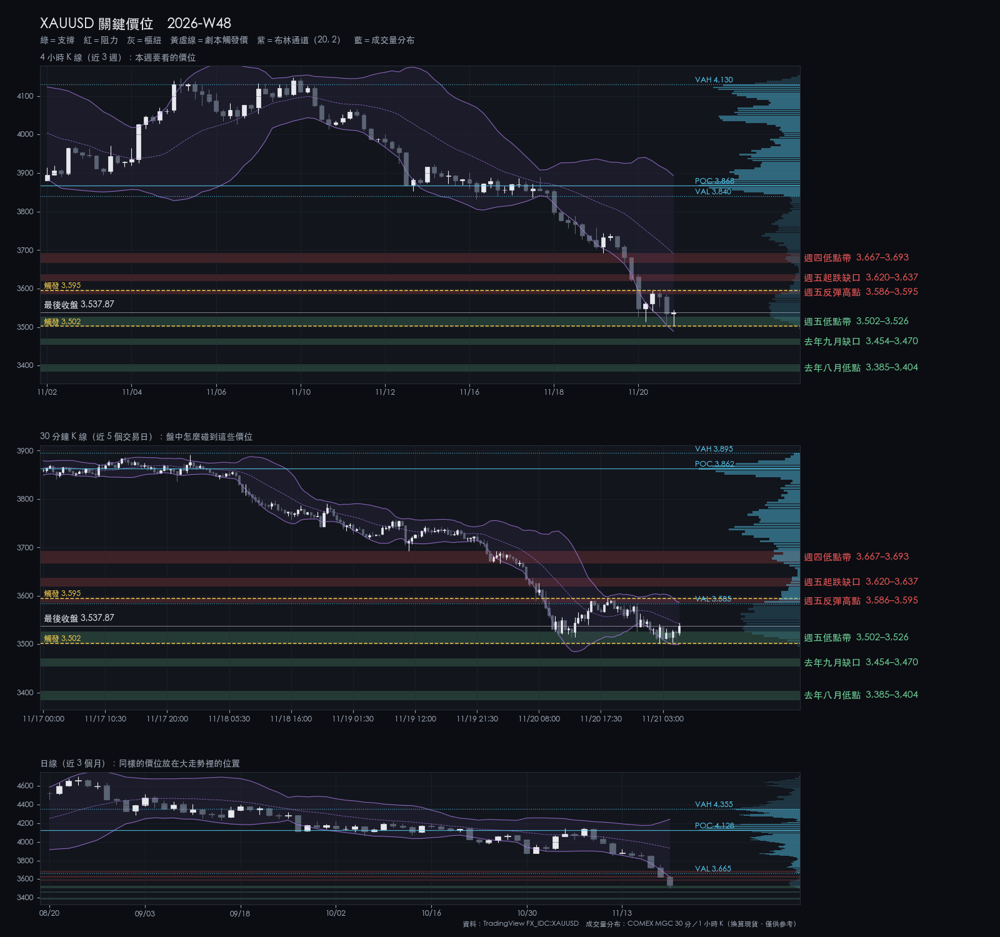
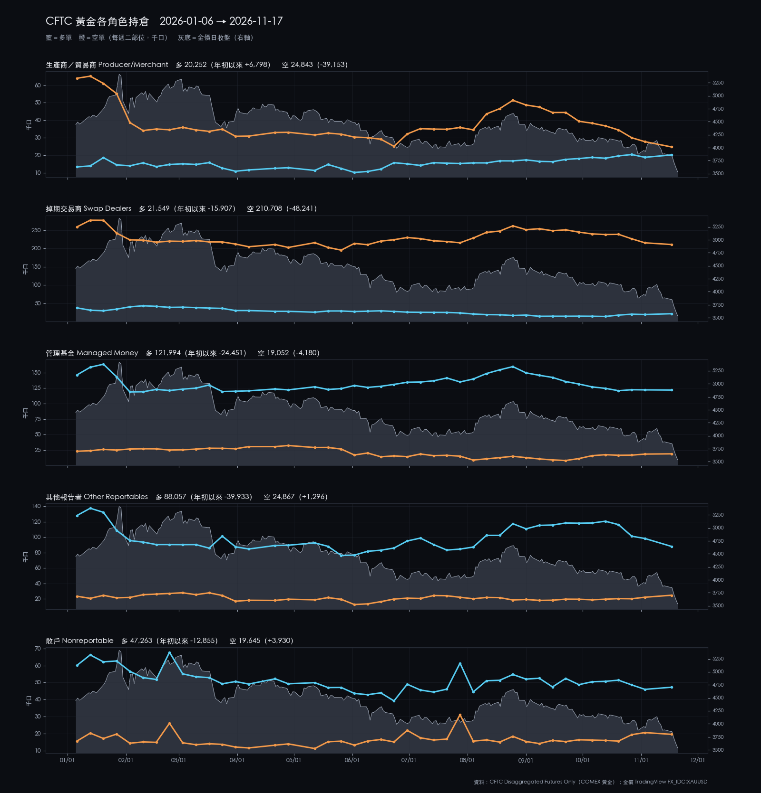
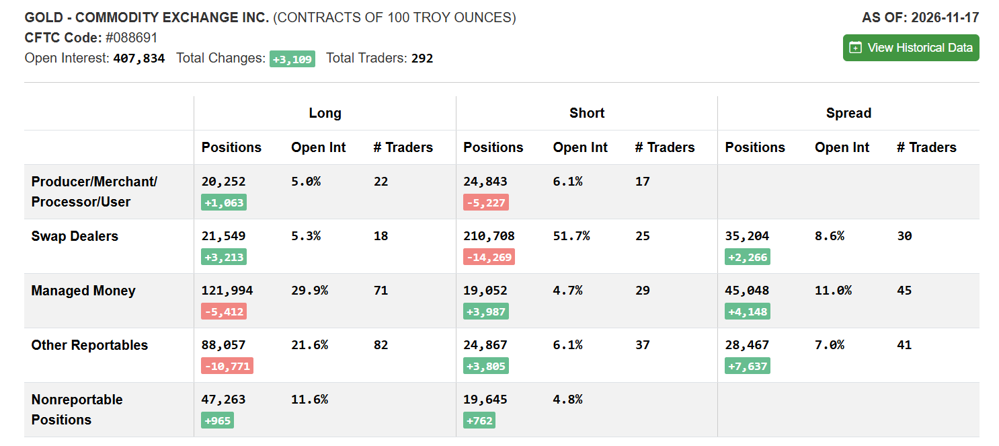

2026-W48 · Sun · 信心 medium 單一來源
XAUUSD 2026-W48 週報
Fed 紀要：幾乎所有與會者認為可能宜再升息；美股一週跌 8.6%。同週金價連跌五天、跌 8.9%，週收 3538，2025 年 9 月以來最低。
本週建議 觀望：S1 暫停、S2 不建議；等 4h 收盤對 3502–3595 表態
資料截止：2026-11-20T21:30:00+00:00
關鍵價位

| 3,667.32–3,693.17 | 阻力 | 週四低點帶 | 反彈第二目標；1wk 布林下軌 3683.86 在帶內 |
|---|---|---|---|
| 3,619.81–3,636.73 | 阻力 | 週五起跌缺口 | 反彈第一目標；1d 布林下軌 3622.66 在帶內 |
| 3,586.07–3,595.21 | 阻力 | 週五反彈高點 | 到這裡不追多；4h 收上 3595.21 才算反彈成立 |
| 3,502.00–3,526.24 | 支撐 | 週五低點帶 | 4h 收在帶內或之上先觀望；4h 收破 3502.00 看下一帶 |
| 3,454.06–3,470.31 | 支撐 | 去年九月缺口 | 破 3502.00 後的第一目標；到這裡不追空 |
| 3,384.74–3,404.41 | 支撐 | 去年八月低點 | 破 3454.06 後的第二目標 |
劇本
| 偏空 | 40% | 4h 收破 3502，看 3454–3470（去年九月缺口） | 3,502.00 |
|---|---|---|---|
| 偏多 | 35% | 4h 收上 3595，看 3620–3637，再看 3667–3693 | 3,595.21 |
| 整理 | 25% | 在 3502–3595 之間整理，等週三晚上 PCE | — |
本週看什麼
- 3502–3526 週五低點帶：4h 收盤守不守得住
- 3586–3595 週五反彈高點帶：4h 能否收上
- 週三 21:30 PCE、GDP、耐久財；週四感恩節美股休市
S1／S2
| S1 V3.9 | wait | —：前測累計 −5.02% 已達暫停門檻，檢視前不推薦 |
|---|---|---|
| S2 V3.2 | wait | —：3502–3526 是候選區，但停損 25 點不到半根 4h ATR |
事件
| 2026-11-23 13:00 | Fed 行事曆：本週沒有主席或理事的演說、座談或作證 | Fed 官方行事曆；有投票權的地區聯儲官方頁面也沒有列出主席談話。時間欄只作排序用。 |
|---|---|---|
| 2026-11-25 21:30 | 美國 10 月個人所得與支出（PCE）、第三季 GDP 第二次估計 | BEA 行事曆（美東 8:30）。公布前持倉先評估是否平倉；前後 30 分鐘不新進場（執行者建議）。 |
| 2026-11-25 21:30 | 美國 10 月耐久財訂單；23:00 新屋銷售 | Census 行事曆（美東 8:30、10:00），與 PCE、GDP 同時。 |
| 2026-11-26 03:00 | Fed 褐皮書（Beige Book） | Fed 官方行事曆（美東 11/25 2:00 p.m.）。前後 30 分鐘不新進場（執行者建議）。 |
| 2026-11-26 13:00 | 感恩節：美股休市 | NYSE 行事曆。COMEX 黃金期貨的假日交易時間沒有查到；假日前後成交較清淡（判斷）。時間欄只作排序用。 |
| 2026-11-27 21:30 | 美國 10 月 Advance Economic Indicators（貿易、零售與批發庫存） | Census 行事曆（美東 8:30）。次級數據（判斷）。 |
| 2026-11-28 02:00 | 美股提早收盤（NYSE 美東 13:00） | NYSE 行事曆；在週末全平之前 2 小時。 |
| 2026-11-28 04:00 | 週末全平（交易規則 4） | 週六 04:00 前全部平倉，不留倉過週末（交易規則 4）。 |
| 2026-11-28 13:00 | FOMC 靜默期開始（12 月 8–9 日會議前） | 費城聯儲行事曆（11/28–12/10）；Fed 官方日曆沒有查到。下一個利率決議是台北 12/10（四）03:00。 |
上週回顧
- 週一 11:00 4h 收 3851.56、收破 3852.35，下跌劇本觸發；權重最高的整理劇本同時失效
- 週三到週五三天跌 8.1%；兩個下跌目標都到，週低 3502 比第二目標再低 305 點
- 反彈劇本沒有觸發：全週最高 3901.23，沒有 4h 收上 3924.30
| 2026-W44 | 3,992.6 | 4,083.41 | 3,870.255 | 3,875.19 | -2.94% |
|---|---|---|---|---|---|
| 2026-W45 | 3,874.3 | 4,146.99 | 3,874.3 | 4,069.63 | +5.04% |
| 2026-W46 | 4,069.99 | 4,148.6 | 3,852.62 | 3,883.94 | -4.57% |
| 2026-W47 | 3,879.4 | 3,901.23 | 3,502.93 | 3,537.83 | -8.80% |
市場消息
情緒 風險趨避：美股一週 −8.6%、VIX 升到 35.89；同週金價 −8.9%
- 10 月 FOMC 紀要：幾乎所有與會者認為可能宜再升息；12 月升 1 碼機率約 99%
- 美股 11/20 重挫，S&P 500 一週 −8.6%、Nasdaq −10.0%，進入修正
- 金價一週跌約 8.9%、3 月以來最大；週五殖利率下滑，金價仍跌
展開看消息整理：上週 8 則、一週變化、近 3 個月、近半年主線
上週消息（2026-11-14～2026-11-20）
| 11-17 | Fed／總經 | 10 月零售銷售月增 0.2%（符合預期），不含汽車 +0.6%（預期 +0.4%）；工業生產月減 0.4%。 | 10 年期殖利率 5.107%（−1.4bp）；12 月期金收 3,864.2（+11.2） | U.S. Census Bureau、Investrade |
|---|---|---|---|---|
| 11-17 | 美股／AI | Nvidia 第三季營收 1,158 億美元、年增 103%，第四季指引 1,300 億美元（±3%）。 | 盤後漲 3–5%（FXStreet）；11/18 道瓊 −1.11%、S&P 500 −0.23% | Nvidia、FXStreet、Investrade |
| 11-18 | Fed／總經 | 10 月 FOMC 紀要：幾乎所有與會者認為未來數月可能宜再升息；表決 10 比 2，兩票主張當場升 1 碼。 | 11/18 市場看 12 月升 1 碼約 95%、升 2 碼約 5%（FedWatch，Investrade 轉述） | Federal Reserve、Federal Reserve（會議紀要）、Investrade |
| 11-18 | 黃金 | 金價跌破 3,800，2025 年 9 月以來最低；報導歸因升息預期、美元 19 個月高與技術性賣壓。 | 12 月期金收 3,741.9（−122.3，−3.16%）；XTB：白銀跌 5.3% 到 44.88 | FXStreet、XTB、Investrade |
| 11-18 | 地緣／油價 | EIA 原油庫存增 340 萬桶（預期 +10 萬）；WTI 跌 3.2% 收 83.26，Brent 收 91.95。 | Brent 11/20 收 92.57；Kitco：Brent 一週 −3.4%，連三週下跌 | Investrade、Investrade、Kitco |
| 11-20 | 美股／AI | 美股重挫：S&P 500 −3.7%、Nasdaq −5.4%，一週 −8.6%、−10.0%，進入修正。 | Investrade 引述路透：SEC 調查 Nvidia 會計，股價午後跌逾 10% | Investrade、Kitco、美聯社（Yakima Herald 轉載） |
| 11-20 | 黃金 | 現貨金再跌 2.4%、盤中低 3,502.93，一週跌約 8.9%，3 月以來最大；白銀期貨一週跌約 16%。 | 同日 10 年期殖利率 5.04%→4.92%（財政部）；Kitco：金銀未受惠於殖利率下滑 | Kitco、Investing.com、Investrade、U.S. Treasury |
| 11-20 | 台股／台幣 | 台股一週跌 7,641.83 點（−17.50%）收 36,033.29；外資週賣超 2,186.69 億元。 | 三大法人合計賣超 3,303.24 億元；11/16 跌 2,635.04 點、11/20 跌 2,393.60 點 | 臺灣證券交易所（市場成交資訊）、臺灣證券交易所（三大法人週報 11/16–11/20） |
一週變化
| 黃金（COMEX 期貨） | 3,515.40 | -9.54% | 11-20 |
|---|---|---|---|
| S&P 500 | 6,910.39 | -8.61% | 11-20 |
| Nasdaq | 22,617.73 | -10.02% | 11-20 |
| 加權指數 | 36,033.29 | -17.50% | 11-20 |
| Brent 原油 | 92.57 | -3.41% | 11-20 |
| 美 10 年期殖利率 | 4.91 | -24 bp | 11-20 |
| 美元指數 | 103.81 | +0.39% | 11-20 |
| 美元／台幣 | 33.03 | +0.27% | 11-20 |
| VIX | 35.89 | +85.96% | 11-20 |
資料：Yahoo Finance 日收盤（yfinance）
近 3 個月
| 11-05 | 美股／AI | AI 與晶片股重挫，市場擔心民主黨國會收緊 AI 規範、放慢資料中心審批。 |
|---|---|---|
| 11-06 | Fed／總經 | 10 月非農就業增加 16.5 萬，遠高於預期約 6.5 萬；失業率降到 4.1%，12 月升息預期升溫。 |
| 11-06 | 台股／台幣 | 台股跟著 AI 股連日重挫，外資連續賣超；11/6 盤中一度跌逾 3,700 點，史上最大盤中跌點。 |
| 11-10 | Fed／總經 | 10 月 CPI 月增 0.4%（預期 0.3%）、核心 0.3%（預期 0.2%）；BLS 未公布年增率。 |
| 11-10 | Fed／總經 | Waller：傾向 12 月升 1 碼，核心 CPI 約 0.3% 或更高應考慮 2 碼；Logan：至少再升 2 次。 |
| 11-12 | 美股／AI | Nvidia 宣布執行長黃仁勳辭職並退出董事會，即日生效；財務長 Kress 暫代，11/17 公布財報。 |
| 11-12 | 黃金 | 金價週二到週四連跌三天、創 52 週新低；報導歸因 CPI 後美元反彈與美債殖利率急升。 |
| 11-13 | 台股／台幣 | 台股一週漲 3,973 點（+10.01%）收 43,675.12；外資週賣超縮到 967.87 億元。 |
近半年主線
| 伊朗衝突與油價 | 2026-02-28 | Brent 週收約 92.6、一週跌約 3.4%，連三週下跌；EIA 原油庫存增幅高於預期。 |
|---|---|---|
| Fed 重回升息與高殖利率 | 2026-06-17 | 10 月紀要：幾乎所有與會者認為可能宜再升息；市場看 12 月升 1 碼約 99%，10 年期殖利率一週 −24bp。 |
| AI 支出與回收疑慮 | 2026-06-05 | Nvidia 財報優於預期，美股仍重挫：Nasdaq 一週 −10.0%、S&P 500 −8.6%。 |
| 黃金從 1 月高點回落 | 2026-01-29 | 一週跌約 8.9%、週收約 3,538，2025 年 9 月以來最低，距 1 月高點約 −37%。 |
| 外資賣台股、台幣走貶 | 2026-10-06 | 台股一週跌 17.5%、收 36,033；外資賣超約 2,187 億元，台幣週收約 33.03。 |
消息只是背景，不是進出場依據；「未確認」表示只找到評論或二手來源。
CFTC
11/17（週二）那期：大戶多單 12.2 萬（−5,412）、空單 +3,987，淨多 10.3 萬；不含週三到週五的下跌。下一期延到 12/1 04:30。
持倉反映的是建立它的那一週，不能預測下一週；看研究結論 →

CFTC 原始截圖（2026-11-17）

展開看策略績效：S1／S2 回測（資料到 2026-10-09）
| S1 V3.9 | 346 | 53.47% | +61.04% | 1.75 | 4.67% | 3.05 | +22.46%（黃金 -2.87%） |
|---|---|---|---|---|---|---|---|
| S2 V3.2 | 130 | 41.54% | +51.54% | 1.67 | 12.79% | 1.79 | +1.21%（黃金 -2.87%） |
| S1 V3.9 | +0.0% | -0.1% | -1.57% |
|---|---|---|---|
| S2 V3.2 | +2.0% | -5.0% | -1.0% |
| 黃金 | +10.06% | -6.45% | +0.8% |
TradingView 回測匯出（固定部位、不複利）；只在重新匯出時更新，不是訊號。 距上次匯出 45 天。完整績效頁 →
展開看細節：價位依據、劇本完整條件、市場摘要、證據限制
市場摘要
W47 收 3537.83，週開 3879.40，對前週收 −8.91%（開收 −8.80%），是 2026-03-16 那週以來最大週跌幅，收在週區間由下往上 8.8% 處；振幅 398.30 點，是 2026-03-23 那週以來最大。五天都收跌：週一 4h 收破上週的 3852.35；週三跌 3.22%、日收跌破 3,800；台北週四 03:00 公布的 10 月 FOMC 會議紀要顯示幾乎所有與會者認為未來數月可能宜再升息，週四跌 2.68%；週五美股重挫（S&P 500 −3.7%），金價同日再跌 2.41%、盤中 3502.93，是 2025-09-02 以來最低，當天美國 10 年期殖利率由 5.04% 降到 4.92%。週三到週五三天跌 8.08%。價格低於 4h EMA50 3795.26、1d EMA50 4048.01；日收在 1d 布林下軌 3622.66 下方 84.83 點，週收在 1wk 布林下軌 3683.86 下方 146.03 點；RSI14 1d 23.39、4h 20.33。DXY 週收 103.840（+0.42%），連四週收高，是 2025-03-24 那週以來最高。
價位依據
| 週五低點帶 | 3502.00–3526.24 | 實際成交價：週五 11/20 23:00 那根 4h 低 3502.00（本週與 2026 年盤中最低；日線／週線匯出記 3502.93）；11/21 03:00 那根低 3502.94；11/20 11:00 那根低 3514.355；11/20 07:00 那根低 3526.24（亞洲時段急跌的低點）。 帶寬 24.24 點，約 0.48 根 4h ATR（50.59，最近 14 根 4h 真實區間的簡單平均）。這四根 4h 的低點都落在這 24 點內，每次都收回：四根收 3547.32、3560.68、3535.25、3537.87，全週最低的 4h 收盤是 3535.25。計算值 1h 布林下軌 3515.64 在帶內，30m 布林下軌 3499.68 在帶下緣之下 2.32 點，4h 布林下軌 3488.88 在帶下緣之下 13.12 點。2025-09-04 的日線低點 3511.477 在帶內，2025-09-03 的日線低點 3526.51 在帶上緣之上 0.27 點（14 個月前的價位）。週收 3537.83 在帶上緣上方 11.59 點（以 ATR 衡量帶寬是執行者選定的描述方式，未經核准，下同）。 |
|---|---|---|
| 週五反彈高點 | 3586.07–3595.21 | 實際成交價：週五 11/20 15:00 那根 4h 高 3595.214（亞洲時段急跌之後的最高）、19:00 那根高 3592.47、23:00 那根高 3586.071。邊界 3586.07、3595.21 為四捨五入到 0.01。 帶寬 9.14 點，約 0.18 根 4h ATR。三根 4h 連續在這裡受阻，高點一根比一根低；急跌後最高的 4h 收盤是 15:00 那根的 3587.40，在帶內。計算值 1h 布林上軌 3593.46 在帶內，30m 布林上軌 3585.87 在帶下緣之下 0.20 點。4h 向下缺口 3565.75–3619.81 回補到 3595.214 為止。 |
| 週五起跌缺口 | 3619.81–3636.73 | 實際成交價：週五 11/20 03:00 那根 4h 低 3619.81（向下缺口 3565.75–3619.81 的上緣；週四日線低 3620.13）；11/20 07:00 那根高 3636.726（週五日線最高，也是向下缺口 3636.726–3667.32 的下緣）。上緣 3636.73 為 3636.726 四捨五入。 帶寬 16.92 點，約 0.33 根 4h ATR。週四日收 3625.18 在帶內。計算值 1d 布林下軌 3622.66、1h EMA50 3630.65 在帶內。（判斷）週五亞洲時段急跌的起跌區：回到這裡等於回到日線布林下軌，下方缺口未補完、上方還有一個缺口。 |
| 週四低點帶 | 3667.32–3693.17 | 實際成交價：週四 11/19 23:00 那根 4h 低 3667.32（向下缺口 3636.726–3667.32 的上緣）；11/20 03:00 那根高 3681.185（向下缺口 3681.185–3702.40 的下緣）；11/19 11:00 那根低 3693.17（週四亞洲時段低點）。 帶寬 25.85 點，約 0.51 根 4h ATR。計算值 1wk 布林下軌 3683.86、4h 布林中軌 3691.01 在帶內。一個未回補向下缺口的上緣就是帶下緣，另一個的下緣 3681.185 在帶內。（判斷）週收要回到週布林通道內，必須先收回這一帶。 |
| 去年九月缺口 | 3454.06–3470.31 | 實際成交價：2025-09-02 日線低 3470.31，是本週之前最後一根低點低於 3502.93 的日線（之後每一根日線的低點都高於 3470.31，逐根重算到 11/20）；2025-08-29 日線高 3454.06。匯出的日線沒有 2025-09-01 那一根，這兩根之間是日線缺口。邊界是 14 個月前的價位。 帶寬 16.25 點，約 0.32 根 4h ATR。帶上緣 3470.31 在週收下方 67.52 點、在 4h 低點 3502.00 下方 31.69 點。計算值 4h 布林下軌 3488.88 在帶上緣上方 18.57 點。本週低點是 2025-09-02 以來最低，所以下方最近的參考只能取自去年。 |
| 去年八月低點 | 3384.74–3404.41 | 實際成交價：2025-08-29 日線低 3404.41、2025-08-28 日線低 3384.74，是 2025-09-02 缺口之前最後兩個交易日的日線低點。邊界是 15 個月前的價位。 帶寬 19.67 點，約 0.39 根 4h ATR。帶上緣在週收下方 133.42 點，約 1.29 根 1d ATR（103.03）。計算值 1wk EMA200 3305.27 在帶下緣之下 79.47 點。（判斷）距離遠，列出是為了讓下跌劇本有第二個參考，不是預期會到。 |
劇本完整條件
| 偏空 | 40% | 4h 收盤跌破 3502.00（週五低點、2026 年盤中最低）。 | 觸發後 4h 收盤站回 3526.24（週五低點帶上緣）之上。 | 第一目標 3454.06–3470.31（2025 年 9 月初日線缺口）；第二目標 3384.74–3404.41（2025 年 8 月底日線低點）。 |
|---|---|---|---|---|
| 偏多 | 35% | 4h 收盤站上 3595.21（週五反彈高點帶上緣）。 | 觸發後 4h 收盤跌回 3586.07（週五反彈高點帶下緣）之下。 | 第一目標 3619.81–3636.73（週五起跌缺口與 1d 布林下軌）；第二目標 3667.32–3693.17（週四低點與 1wk 布林下軌）。 |
| 整理 | 25% | 價格在週五低點帶 3502.00–3526.24 與週五反彈高點帶 3586.07–3595.21 之間往復，沒有 4h 收盤站上 3595.21，也沒有 4h 收盤跌破 3502.00。 | 4h 收盤站上 3595.21，或 4h 收盤跌破 3502.00。 | 區間內往復：上看 3586.07–3595.21 的反應，下看 3502.00–3526.24。 |
轉折條件
4h 收盤站上 3595.21，或 4h 收盤跌破 3502.00——任一發生即脫離整理區間，屆時以 live 結構重新評估。
S1／S2 完整條件
| S1 V3.9 | 暫停推薦：S1 V3.9 的預註冊前測（以策略訊號計）已達暫停門檻——已計 23 筆、累計 −5.02%，途中門檻是 −3.67%；檢視完成前不推薦 S1 進場。供參考的觸發位置：30m 收盤站上 30m 布林上軌並出現正式 V3.9 訊號；目前上軌 3585.87，距最後收盤 3537.87 為 48.00 點。做多是逆勢（價格在 30m、1h、4h、1d 的 EMA50 與 EMA200 之下）；30m ATR 由上週的 9.96 升到 25.54，比固定停損 25 點還大（判斷：一根普通的 30m 就可能碰到停損）。等級 —。 | 固定停損：成交價下方 25 點；TP1 1R、TP2 3.5R。 | 固定口數與固定停損（細節見密碼頁）；同時只持一個部位。 |
|---|---|---|---|
| S2 V3.2 | 目前不建議。候選位置：價格回到 3502.00–3526.24 週五低點帶並出現正式 V3.2 訊號；帶上緣在週收 3537.83 下方 11.59 點。在 3515 附近成交，停損約 3490（週五低點 3502.00 下方 12.00 點）。例外太多：做多是逆勢、五天連跌；固定停損 25 點不到半根 4h ATR（50.59），也小於一根 30m ATR（25.54）（判斷：正常波動就可能碰到停損）；週五 15:00 之後三根 4h 的高點一根比一根低。還缺什麼（判斷）：4h 收盤站回 3526.24 之上後再回測，且 30m ATR 回落到 25 點以下。條件式預評等級 —（執行者把量表延伸用於尚無訊號時，未經核准；在支撐區等訊號是執行者的用法）。 | 固定停損：成交價下方 25 點；TP1 2R、TP2 4R。 | 固定口數與固定停損（細節見密碼頁）；同時只持一個部位；S2 每週上限 2 次。 |
CFTC 完整數字
本週有新一期：2026-11-17（週二持倉）當期，台北 11/21（六）04:30 公布；只到週二收盤，不含週三到週五的下跌。可對照本圖核對：未平倉 407,834（+3,109）；Managed Money 多 121,994（−5,412）、空 19,052（+3,987）、價差 45,048（+4,148），淨多 102,942；Swap Dealers 空 210,708（−14,269）；Other Reportables 多 88,057（−10,771）；散戶（Nonreportable）淨多 27,618。圖上的增減是對 11/10 那期，那一期沒有截圖。以上僅作描述，不作方向訊號。Commitments of Traders 由 cftc.gov 免費公布，屬美國公有領域資料；本圖只含部位統計，不含任何帳戶、持倉或身分資訊。
證據限制
- 本期僅一份合格報告（另一 producer 暫停中），為單一來源；方向判斷沒有交叉檢驗。
- 本報告於 2026-11-23（週一）凌晨完稿，版次週依產生時間標為 W48；行情資料是 11/16–11/20 完整一週。固定提問覆核尚未執行，公開時是未經覆核的 v1。
- CFTC 最新一期是 11/17（週二）持倉，到週五收盤已落後 3 天，看不到週三到週五下跌期間的部位；11/10 那期沒有截圖、不在序列內，序列上的淨部位變動是對 11/03 的兩週變動。下一期（11/24）延到台北 12/1（二）04:30 公布。CFTC 部位與各角色年初至今圖僅作背景描述，不作方向訊號。
- 市場消息摘要以自己的文字寫成，「未確認」表示只找到評論或二手來源；新聞不作為價位、機率或進場條件。Fed 會議紀要的表決與升息句子取自頁面後段的摘要讀取；週五美股下跌的原因（含 Nvidia 遭調查的報導）是媒體轉述。
- 事件行事曆（Fed、BEA、Census、BLS、CFTC、NYSE、各地區聯儲）於 2026-11-23 查閱，未存頁面快照：已查閱、未存證。Fed 頁面未標時區，依慣例以美東計。FOMC 靜默期日期取自費城聯儲頁面，Fed 官方日曆沒有查到。COMEX 黃金期貨的感恩節交易時間、初領失業金是否提前公布都沒有查到。
- 價位圖的成交量分布以 COMEX 微型黃金期貨（MGC）成交量換算現貨價位，只作參考；過去研究顯示成交量無法區分 S1／S2 的勝負。
- 策略績效為 2026-10-09 匯出的回測，距今 45 天；只作背景，不是進場依據。
- GVZ、10 年期公債殖利率、通膨預期與 VIX 的 TradingView 資料自 2026-06-18 起未更新，本報告未使用。
- 來源比較共 10 組：6 組 similar、4 組 review（XAUUSD 4h／日線／週線、DXY 日線）；review 組最新收盤差最大是日線的 49.0 bps，比上週大。所有計算價一律採 TradingView 人工匯出。
- 下方兩個支撐（3454–3470、3385–3404）的邊界是 14–15 個月前的日線價位。
研究證據，非投資建議。所有 Entry／SL 皆為條件式，實際執行前必須以 live TradingView 重新確認訊號與價格；最終決定屬於帳戶擁有者。